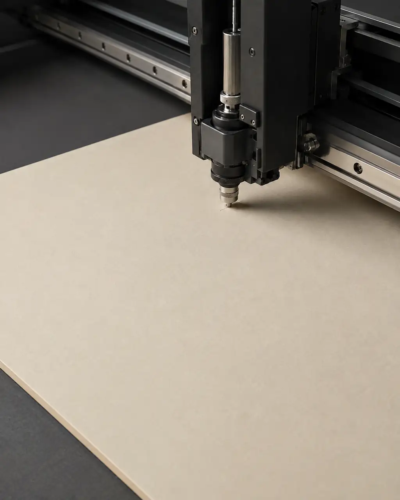

ENGINEERED TACTILITY
Material-led.
Calm, premium and restrained. The material and the print evidence lead the visual language.
HADI DIGITAL CRAFT / GUJRAT
HDC is a specialised commercial printing-services business for DTF, UV DTF, offset and large-format / branding work.
WHAT HDC DOES
The work is approached through the physical evidence of print: material, surface, transfer, edge, registration and finish. The goal is not to sell equipment—it is to make better-informed commercial print decisions.

ENGINEERED TACTILITY
Calm, premium and restrained. The material and the print evidence lead the visual language.
COMMERCIAL CLARITY
Customer conversations begin with what needs to be printed and where it will live.